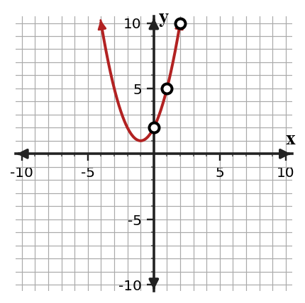

Selecting Appropriate Models
Mathematical idea: A model choice is strongest when it matches the pattern in the table, graph, equation, and context.
Today you will compare linear, quadratic, and exponential evidence instead of guessing from keywords. You will also critique model claims by checking differences, ratios, and reasonableness.
Learning Target
Learning Target: Students will determine whether a situation is best modeled by a linear, quadratic, or exponential function.
I can statements
- I can construct evidence from tables, graphs, and contexts to choose a linear, quadratic, or exponential model.
- I can apply rate, second-difference, and ratio patterns to select an appropriate function family.
- I can determine whether a chosen model is reasonable for a situation and its data pattern.
What's To Come
This is a long-range preview for future lessons. Do not solve it today. Instead, annotate it individually. Circle anything familiar, underline symbols or directions that seem important, and write notes about what information you think will be needed later.
As you annotate, ask yourself: What parts (words, symbols, graphs) do you KNOW? What parts look FAMILIAR? What parts look like jibberish?
A garden club records plant height for five weeks: $12,18,27,41,62$ cm. Design a short modeling response that chooses a function family, states an assumption, and predicts week $6$.
Teacher note: students should annotate familiar representations only; do not solve the future task yet. Listen for evidence words such as table, graph, model, vertex, rate, ratio, or context.
Intro
Directions
Read the introduction aloud with a partner or in a small group. As you read, annotate the text by highlighting important ideas, circling key vocabulary, and writing short notes about connections, questions, or predictions in the margins.
Many situations show quantities changing over time or over repeated steps. In a table, a linear pattern has constant first differences, so the output changes by the same amount each time the input increases by 1. That steady add-on pattern is stronger evidence than a word like increasing.
Some non-linear patterns also increase, so we need more precise clues. A quadratic pattern has constant second differences, while an exponential pattern has a constant ratio between outputs. These checks help us choose a family from the numbers instead of from the size of the outputs.
A garden, business, or science context can sound like it is growing even when the pattern is not exponential. Two situations can both use the word growth, but one may add a fixed amount while another multiplies by a fixed factor. The evidence has to come from the relationship, not just the label.
Graphs, equations, and tables show different clues. A line shows a constant rate of change, a parabola shows turning behavior, and an exponential curve grows or decays by repeated multiplication.
A strong modeling choice also includes a reasonableness check. If a model predicts a negative height, too many people for the space, or unlimited growth in a limited situation, the model may only be useful for part of the domain.
Teacher note: use this space for student annotations from the reading. Ask students to underline the sentence that answers each first two Stop and Discuss questions.
Stop and Discuss
- What evidence helps you identify a linear pattern in a table?
- How can you tell quadratic and exponential patterns apart in a table?
- Why is a context word like "growth" not enough evidence by itself?
Intro S&D answers: Q1: The answer is stated in paragraph A. Q2: The answer is stated in paragraph B. Q3: Students infer from paragraph C; accept answers that connect the concept to evidence rather than keywords.
To classify a model, compare how the outputs change when the inputs increase by 1.
| Input | $0$ | $1$ | $2$ | $3$ |
|---|---|---|---|---|
| Linear | $1$ | $3$ | $5$ | $7$ |
| Quadratic | $1$ | $2$ | $5$ | $10$ |
| Exponential | $3$ | $6$ | $12$ | $24$ |
Pattern checks: linear adds the same amount; exponential multiplies by the same factor.

Context: If the input is week number, the output might be height, money, views, or another quantity whose pattern helps choose the model.
Example 1: Identify the pattern from a table
A robotics team tracks the total number of testing runs they have completed after each day of practice.
| Day | $0$ | $1$ | $2$ | $3$ | $4$ |
|---|---|---|---|---|---|
| Runs | $6$ | $10$ | $14$ | $18$ | $22$ |
- Find the first differences in the outputs.
- Choose linear, quadratic, or exponential and name your evidence.
- Write one sentence explaining why the other two families are weaker choices.
Example 1 answer: First differences are 4, 4, 4, 4, so the pattern is linear. Quadratic is weaker because second differences are not the main clue; exponential is weaker because there is no constant ratio. Teaching reminder: require the evidence sentence, not just the final answer.
You Try It 1: Identify a curved pattern
A drone records its distance from a launch pad during a short test.
| Second | $0$ | $1$ | $2$ | $3$ | $4$ |
|---|---|---|---|---|---|
| Distance | $2$ | $5$ | $10$ | $17$ | $26$ |
- Find the first differences.
- Choose linear, quadratic, or exponential and name your evidence.
- Write one sentence explaining why simply saying "it increases" is not enough.
You Try It 1 answer: First differences are 3, 5, 7, 9 and second differences are 2, 2, 2, so the pattern is quadratic. Increasing is not enough because linear, quadratic, and exponential patterns can all increase. Follow-up: ask which representation made the answer easiest to see.
Stop and Discuss
- Which table clue was easiest to see, and why?
Stop and Discuss A answer: A constant add, constant second difference, or constant ratio should be named with the actual values from the table.
Example 2: Choose a model from data evidence
A school store records online orders during the first five hours after a sale begins.
| Hour | $0$ | $1$ | $2$ | $3$ | $4$ |
|---|---|---|---|---|---|
| Orders | $9$ | $12$ | $21$ | $36$ | $57$ |
- Find the first differences.
- Find the second differences and choose the model family.
- Explain what the model choice suggests about the store orders.
Example 2 answer: First differences are 3, 9, 15, 21. Second differences are 6, 6, 6, so quadratic is best. The number of orders is increasing by larger amounts in a steady second-difference pattern. Teaching reminder: require the evidence sentence, not just the final answer.
You Try It 2: Choose a model from repeated multiplication
A science class records the number of yeast cells in a small sample every hour.
| Hour | $0$ | $1$ | $2$ | $3$ | $4$ |
|---|---|---|---|---|---|
| Cells | $5$ | $10$ | $20$ | $40$ | $80$ |
- Find the ratios between consecutive outputs.
- Choose the model family and state the evidence.
- Explain one reason this model might not stay reasonable forever.
You Try It 2 answer: The ratios are all 2, so exponential is best. It may not be reasonable forever because real samples have limited space and resources. Follow-up: ask which representation made the answer easiest to see.
Stop and Discuss
- How did the YTI model evidence differ from the Example evidence?
Stop and Discuss B answer: The Example used constant second differences; the YTI used constant ratios, so the families changed.
Example 3: Compare arithmetic and geometric patterns
A video challenge has two possible scoring rules. Both rules start with $3$ points and then $9$ points.
- Write the next four terms if the rule is arithmetic.
- Write the next four terms if the rule is geometric.
- Explain how the two models differ even though they share the first two terms.
Example 3 answer: Arithmetic uses a common difference of 6, so the next terms are 15, 21, 27, 33. Geometric uses a common ratio of 3, so the next terms are 27, 81, 243, 729. Same first terms do not guarantee the same model. Teaching reminder: require the evidence sentence, not just the final answer.
You Try It 3: Build two possible sequences
A fundraiser has two possible donation patterns. Both patterns start with $5$ dollars and then $15$ dollars.
- Write the next four terms if the pattern is arithmetic.
- Write the next four terms if the pattern is geometric.
- Describe the evidence you would need to decide which pattern is actually happening.
You Try It 3 answer: Arithmetic uses +10: 25, 35, 45, 55. Geometric uses a ratio of 3: 45, 135, 405, 1215. More data points or context are needed. Follow-up: ask which representation made the answer easiest to see.
Stop and Discuss
- Why can the same first two terms lead to two different models?
Stop and Discuss C answer: Two points or terms do not determine a unique pattern unless the rule type is known.
A critique checks the claim against evidence instead of only saying whether you agree.
| $x$ | $0$ | $1$ | $2$ | $3$ | $4$ |
|---|---|---|---|---|---|
| $y$ | $2$ | $5$ | $10$ | $17$ | $26$ |
Differences: first differences are $3,5,7,9$ and second differences are $2,2,2$.

Context: Constant second differences support a quadratic model even though the outputs are increasing.
Example 4: Critique a model claim
A student looks at the table and says, "This is linear because the output keeps increasing."
| $x$ | $0$ | $1$ | $2$ | $3$ | $4$ |
|---|---|---|---|---|---|
| $y$ | $3$ | $6$ | $12$ | $24$ | $48$ |
- Find the first differences or ratios.
- Identify the strongest model family.
- Critique the student's claim using evidence from the table.
Example 4 answer: The ratios are 2, 2, 2, 2, so the strongest model is exponential. The claim is wrong because increasing outputs alone do not prove linear; a linear pattern needs constant first differences. Teaching reminder: require the evidence sentence, not just the final answer.
You Try It 4: Critique an exponential claim
A student says the table is exponential because the outputs get larger faster.
| $x$ | $0$ | $1$ | $2$ | $3$ | $4$ |
|---|---|---|---|---|---|
| $y$ | $1$ | $4$ | $9$ | $16$ | $25$ |
- Find first differences and second differences.
- Identify the correct model family.
- Critique the student's claim using table evidence.
You Try It 4 answer: First differences are 3, 5, 7, 9 and second differences are 2, 2, 2, so the pattern is quadratic. The claim confuses faster growth with exponential; exponential would need a constant ratio. Follow-up: ask which representation made the answer easiest to see.
Stop and Discuss
- What makes a critique stronger than just naming the correct family?
Stop and Discuss D answer: A critique explains the incorrect reasoning and replaces it with evidence from differences or ratios.
Summary
In this section, you practiced choosing model families by using evidence instead of guessing.
Strong work connects at least two representations, such as a table and equation, a graph and context, or a feature and a model family.
The most common error is trusting a surface clue without checking the mathematical pattern or feature.
Strong understanding means you can explain why a model, transformation, solution, or strategy fits the situation.
Common Mistakes
- Using only keywords. Why it is tempting: words like growth feel helpful. What to check instead: check differences, ratios, and graph shape.
- Confusing faster growth with exponential. Why it is tempting: outputs can increase by larger amounts. What to check instead: look for a constant ratio.
- Ignoring second differences. Why it is tempting: first differences may not be constant. What to check instead: compute second differences before choosing.
- Overextending a model. Why it is tempting: predictions are easy to calculate. What to check instead: check whether the context has limits.
- Naming without evidence. Why it is tempting: a family name feels like an answer. What to check instead: write the table, graph, or equation clue.
Optional Future Task Reflection
Look back at the future task. Do not solve it yet. Highlight one part that makes more sense now than it did at the beginning. Circle one part that still feels unfamiliar. Write one sentence about what representation you would look at first.
For the table, state whether the pattern is most likely linear, quadratic, or exponential, and name the clue you used.
| $x$ | $0$ | $1$ | $2$ | $3$ | $4$ |
|---|---|---|---|---|---|
| $y$ | $4$ | $7$ | $10$ | $13$ | $16$ |
Choose a linear, quadratic, or exponential model for the data and write one sentence of evidence.
| $x$ | $0$ | $1$ | $2$ | $3$ | $4$ |
|---|---|---|---|---|---|
| $y$ | $5$ | $8$ | $17$ | $32$ | $53$ |
What is one idea about choosing model families you understand better now than at the start of class? Write at least one complete sentence.
What is one thing about choosing model families you still want to understand or practice? Be specific — name the idea, not just "everything."